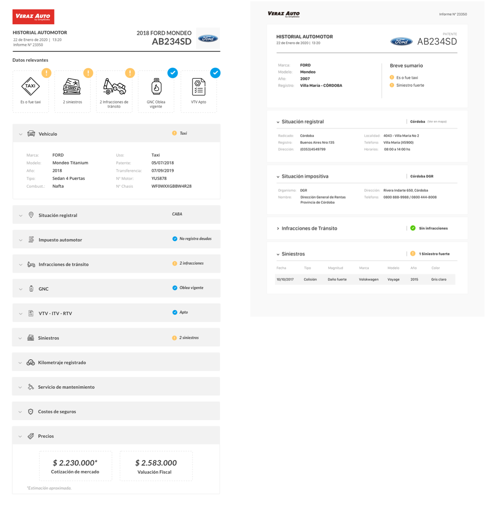
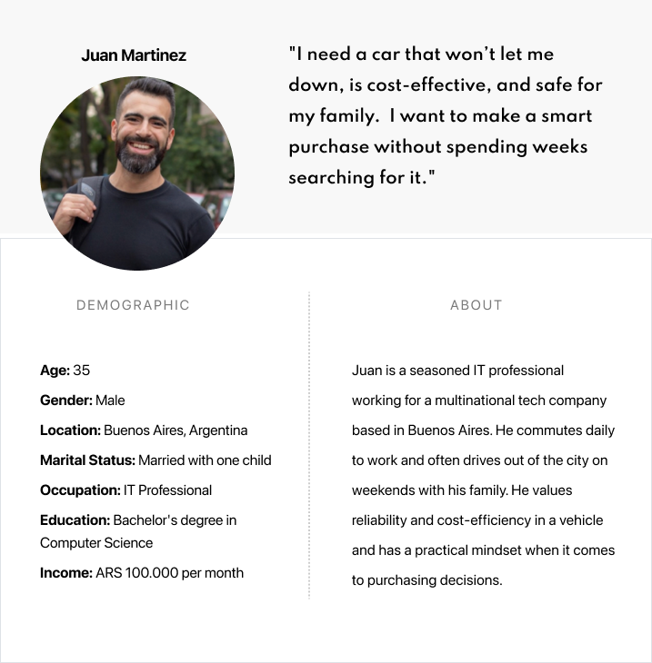

Vehicle History Report
A Design Sprint Under Extreme Time Constraints

A Design Sprint Under Extreme Time Constraints
IT Company
UX/UI Designer, Researcher & Facilitator.
Argentina
1 week
2019
This project was a one-week, sprint-driven exploration to design a Vehicle History Report for the Argentinian used-car market.
Working under tight time constraints, we used a remote Design Sprint to rapidly assess feasibility, define the right moment in the user journey, and prototype a report that could support safer purchasing decisions.

Key insight:
In this context, the most reliable path to accuracy remains certified mechanical inspections. Design can’t replace missing data — but it can help users understand limitations and make more informed choices.
This was not just a design problem — it was a market and feasibility challenge.
Early research revealed:
Despite this, we explored how design could still add value through clarity, transparency, and expectation management.
We ran a fully remote Design Sprint, focusing on two core questions:
Sprint focus areas


Most potential users find information in different places. They browse many sites and also rely on word of mouth for the best used car information.


We produced both digital and printable versions of the report and tested them with four pre-selected users matching our target profile.

We focused on refining the purchase process and crafting guidelines for the wording. Our aim was to ensure clarity and create a smooth, seamless flow for the entire purchase experience.

Suscription process analysis
Report: We focused on determining what information to display and how to present it. We used icons and colors to help users quickly grasp the most significant aspects to consider before buying a used car.
We analyze two possible segments:
B2C: The end consumers who are looking to buy a used car.
B2B: The companies that can provide reports to these end consumers.

Created by our stakeholders, who actively participated in crafting our user profiles.
We focused on the B2C segment and created a persona to gain a deep understanding of our target audience.
We've identified two key moments in the car-buying journey where the report plays a crucial role. The first occurs before personally inspecting the car, and the second follows after the inspection to double-confirm the car's condition.
At these stages, we can offer different prices to make the purchase smoother and more appealing for buyers.


It was decided to start working exclusively in the best-selling used car areas to maximize impact and leverage market demand. By focusing on these high-demand segments, we aim to efficiently allocate our resources and achieve quicker, more substantial results.
After numerous productive discussions, we defined various aspects of the final report. It was essential to incorporate the brand's visual identity into our final design. Some decisions were made out of necessity, while others aimed to convey the depth of our analysis and research.

Digital Report

Print Report
We conducted our first test with four men who were pre-selected by the company. These individuals matched the profiles identified in our user analysis.
This work demonstrates that the Report can significantly guide and assist users in the purchase process. However, we encountered some limitations related to business practices and cultural behaviors.
We strongly recommend a thorough analysis of the information sources used to create the Reports. In Argentina, informality is common, making it sometimes impossible to obtain a comprehensive report on used cars. There is no centralized source for used car information. Therefore, the only way to have a more precise report on a used car is through a new, detailed inspection by a certified mechanic.